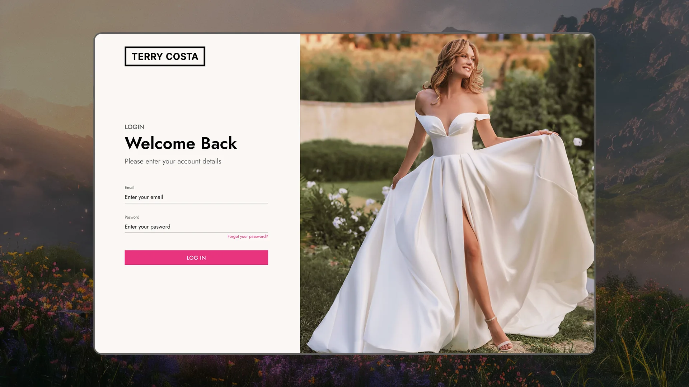
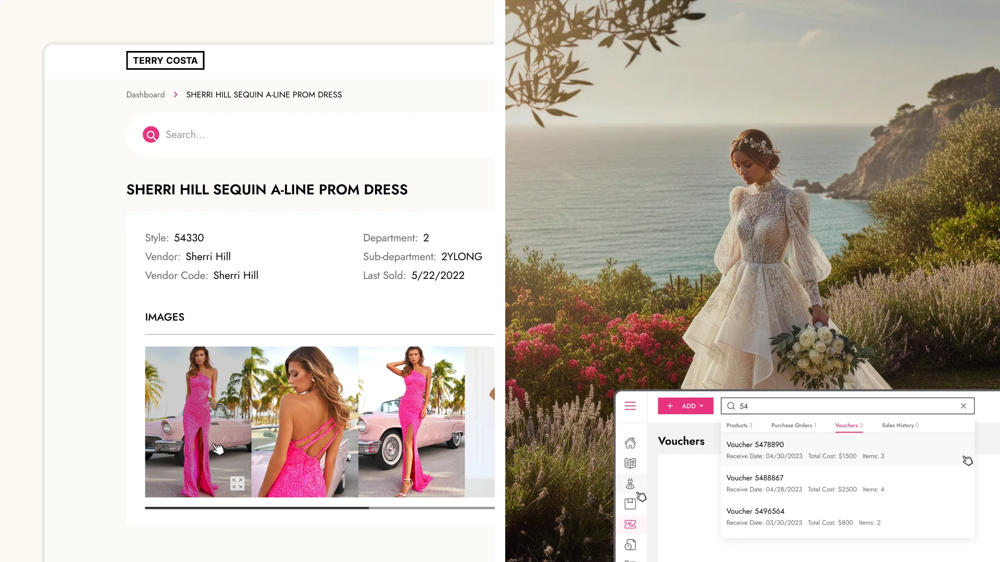
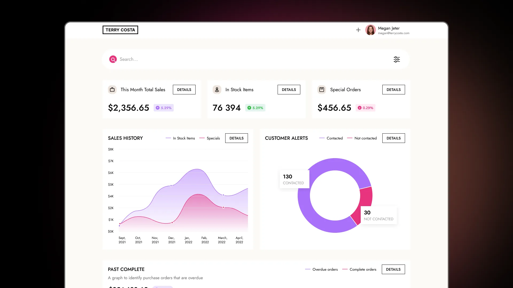
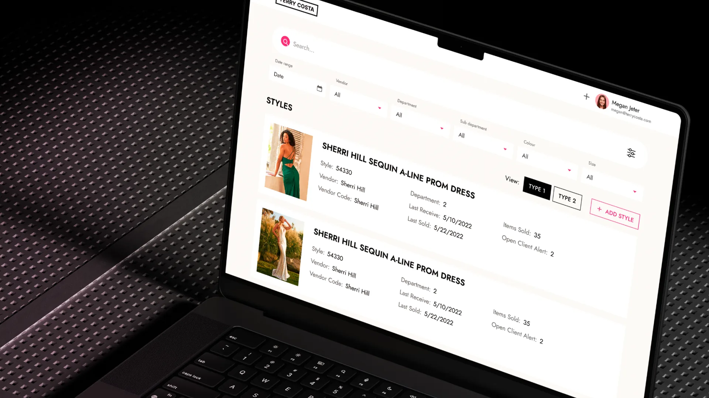
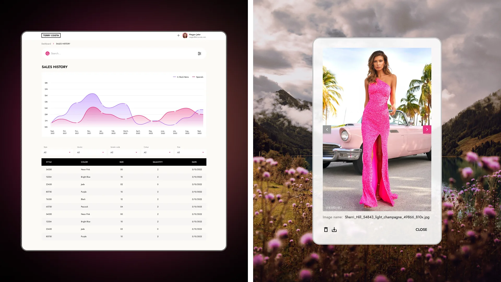
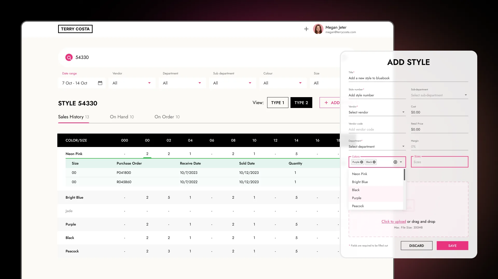

Terry Costa POS · via NewDay agency · Dallas, TX
Two legacy systems, one platform
Building a staff-facing POS dashboard so sales, stock, and vouchers for every style, color, and size lived in one place.

Results
1 grid, every color and size
Style detail pages replaced RetailPro and a paper Bluebook catalog with one real-time record.
Sales, stock, and vouchers on load
The dashboard surfaces this month’s totals and open alerts before staff search for anything.
Same system as the storefront
Staff and shoppers see one brand, not two disconnected products.
Situation
Terry Costa’s back office ran on two systems that never talked to each other: RetailPro, a digital POS handling transactions, and Bluebook, a paper catalog staff kept for style, vendor, and voucher detail RetailPro didn’t track.
Answering a simple question — how many size 8s in Neon Pink are left, and were any promised to a voucher — meant checking a screen and a binder, then reconciling them by hand.
Deciding insight
Sitting with a staffer working a purchase order showed the friction wasn’t finding data — it was that RetailPro and Bluebook each held half the picture, so every answer had to be reassembled by hand across a screen and a binder.
That reframed the build around a single record per style — a Single Style View proposed and validated with staff — one color/size grid that sales history, stock counts, and vouchers all rolled up into, fed by a sync layer against RetailPro and eStyle.
Research
Mapped every field staff cross-referenced by hand — style, vendor, department, receive date, sold date, voucher cost — into one shared style/color/size record, then built the dashboard and detail views around that record instead of around RetailPro and Bluebook’s old boundaries. The record covered five purchase order types and three voucher types, and 30+ report types staff had been pulling from RetailPro by hand.
Handled on the floor, connectivity couldn’t be assumed, so the tool was designed offline-first, with explicit syncing and conflict states surfaced whenever a local edit and a RetailPro/eStyle sync disagreed — and built to PCI DSS and GDPR requirements given the payment and customer data running through it.

Approach
Built a style detail page laying out every color/size combination as one grid, with tabs for sales history, on-hand, and on-order counts instead of RetailPro and a paper Bluebook to reconcile by hand, plus an add-style flow for onboarding new inventory.
Added an image manager for product photography and a voucher search that surfaces receive date, cost, and item count in one lookup, and kept the tool’s visual language — type, pink accent, black square mark — identical to the storefront so it read as one product built by one team.




Also on this engagement
This dashboard shipped alongside a full storefront redesign for the same brand: Terry Costa →